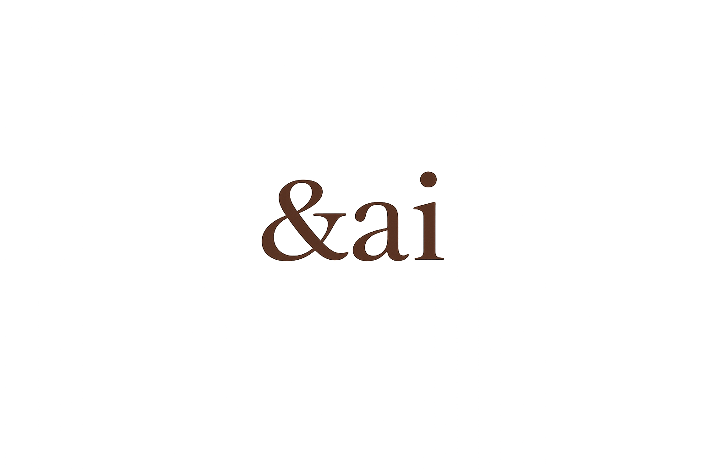

プラスターキャンドル
石こうの質感とやわらかな灯りを合わせた、飾っても灯しても楽しめるキャンドル。

Candle & Aroma Stone Artist
あいちゃいが一つずつ魂を込めて作る、アロマキャンドルと香りの作品。 忙しい毎日の中で、ふっと肩の力が抜ける瞬間を届けます。
About Me
アロマキャンドルと香りの作品を制作するクリエイター。日々の活動から生まれる温度感を、ものづくりにも込めています。
アロマは、ただ良い香りがするだけではなく、その人の気持ちや空間の空気までそっと変えてくれるもの。 その日の疲れが少しほどけたり、深呼吸したくなったりするような香りを大切にしています。
強く残る香りよりも、暮らしの中に自然に寄り添うやさしい香りを。 作品を手にした人の毎日に、小さな癒しのきっかけを届けたいと思っています。
Works
石こうの質感とやわらかな灯りを合わせた、飾っても灯しても楽しめるキャンドル。
火を使わずに香りを楽しめる、生活のすき間にそっと置ける小さな作品。
木のぬくもりを感じる香りで、部屋の空気がすっと整うような時間を作ります。
Process
手に取った人の毎日に寄り添えるように、急がず丁寧に一つずつ仕上げます。
香り、色、質感、飾り方まで含めて、&aiらしい空気を少しずつ形にします。
いつかキャンドル講師として、作る楽しさや向き合う時間の豊かさも届けていきます。
Contact
日々の活動をきっかけに、香りの作品づくりにも挑戦しています。 作品や活動のことは、各リンクからご覧ください。